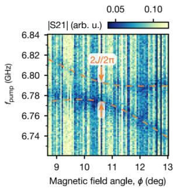
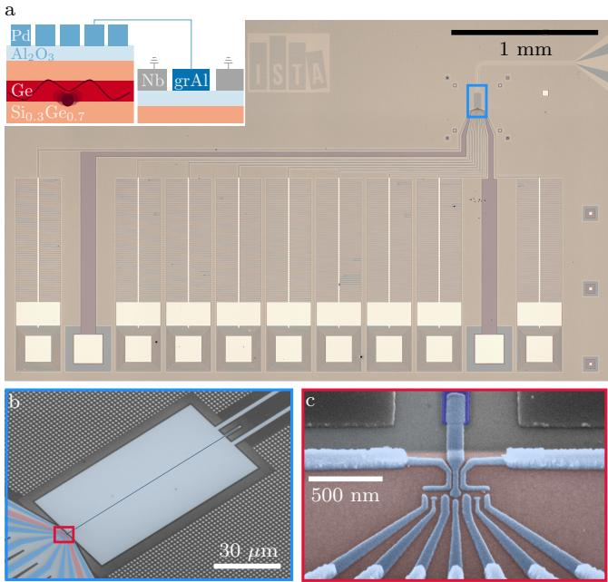
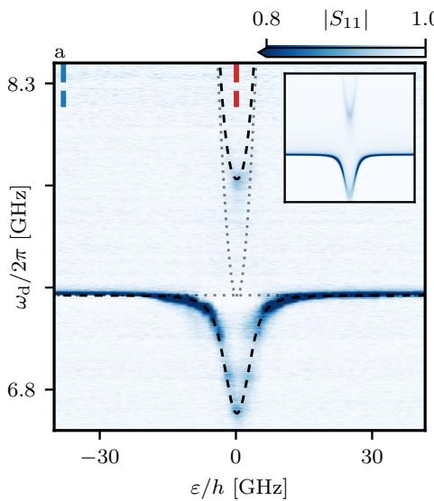
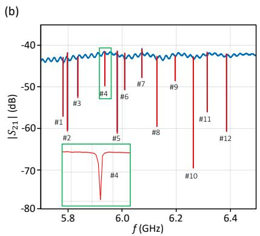
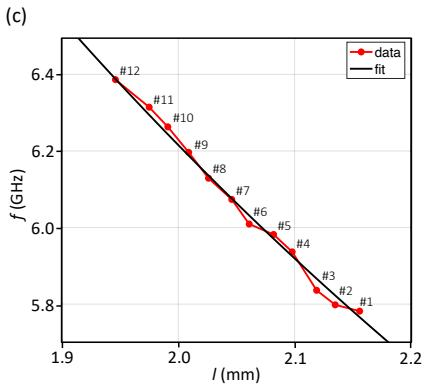
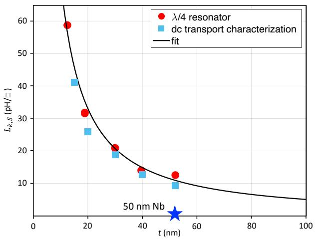
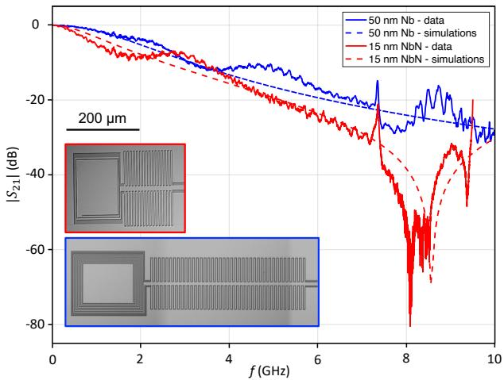

物理图像与定义
在电路量子电动力学（cQED）架构中，半导体量子点通过电偶极相互作用与微波谐振腔耦合，而商用微波器件与传输线的标准特性阻抗为 50 Ω，常规共面波导（coplanar waveguide，CPW）腔也按 50 Ω 设计以匹配测量线路。高阻抗谐振腔（high-impedance resonator，高阻抗腔）指特性阻抗 被刻意提高到 kΩ 量级的超导微波谐振腔：在腔频 固定（需匹配量子比特 4–8 GHz 的典型工作频段）的前提下，提高 等价于增大腔内每个光子的零点电压涨落（zero-point voltage fluctuation），从而直接放大电荷–光子耦合强度 。
物理上这对应着阻抗变换：零点能量 在电容与电感间均分，高 意味着电磁能量更偏向电场一侧，电压波腹处的零点电压随之增大。因此量子点总是制备在腔的电压波腹处，并由腔中心导体伸出的电极直接连接到量子点的 plunger 栅极上。

早期量子点–腔真空 Rabi 劈裂实验汇总（Petta 组 SQUID 阵列腔、Wallraff 组 NbTiN 反射腔、Vandersypen 组两自旋比特虚光子耦合，引自 ，图 1.8）
理论模型：阻抗如何进入耦合强度
腔模的量子化与零点电压
把腔的基频模式等效为 LC 振子，磁通 与电荷 满足 ，引入产生、湮灭算符后
其中 ，。对长度为 、单位长度电容 的 CPW 腔，，电压波腹处的量子化电压为
即零点电压随 增长——这是高阻抗路线的核心标度关系。几何上，CPW 的电容与电感可由保角映射（conformal mapping）计算：，，其中 为第一类完全椭圆积分、 由中心导体宽 与地间距 决定；增大 、减小 分别减小电容、增大电感，是几何层面提高 的手段，但可调范围有限。
电偶极耦合强度
在电偶极近似（量子点尺度 ~100 nm 远小于腔波长）下，相互作用哈密顿量为 。设量子点电偶极矩为 、偶极方向与腔电场平行，腔电压经电容分压系数 耦合到量子点，得到
其中 为量子点到地的有效距离。同一结果的常用等价写法是以电阻量子 kΩ 归一化：
为耦合电极到量子点的杠杆臂（lever arm）。两种写法都给出 ：腔频必须锚定在比特频段，阻抗就成为唯一可工程化放大的因子。量子点本征基下的有效横向耦合还要乘以混合角因子，（见Jaynes–Cummings 模型）。作为量级估计， 从 50 Ω 提高到 1 kΩ 带来约 倍的耦合增强；论文中 kΩ 的 TiN 腔相对 50 Ω 腔理论上可提升约 8.4 倍。
两条实现路线
由于 （ 为单位长度电感），核心问题是把电感做大。实验上有两条成熟路线。
SQUID 阵列腔
约瑟夫森结在小电流下是强非线性电感。由约瑟夫森方程 与 ，结合 得结电感
为磁通量子。对称 SQUID 是两个结并联成的环路，干涉使临界电流 ，从而
电感可被穿过环路的外加磁通 原位调节。单个结的非线性太强、能级间隔不等，无法直接用作线性谐振器；把 个 SQUID 串联成分布式SQUID 阵列腔可以摊薄非线性（仅在高光子数下显现），同时保留磁通可调性。对节点磁通做傅里叶展开后，阵列哈密顿量对角化为一系列模式
其中 是每个 SQUID 的对地电容、 是 SQUID 自身电容、 是单个 SQUID 的等离子体频率（plasma frequency）。基频 模式即工作模式，满足 ，扫磁场即可原位调节腔频与阻抗——这是 SQUID 阵列路线相对材料路线的独有优势，历史上同一结构也被用于制备参量放大器。
高动态电感材料腔
第二条路线利用强无序超导薄膜的动态电感（kinetic inductance）：库珀对具有惯性，交流驱动下无法瞬时响应，其动能 形式上就是电感储能。对长 、宽 、厚 的超导纳米线
为库珀对密度。单位面积动态电感（方块电感，sheet inductance） 是选材的横向比较标准；单位长度电感 ，因此工艺上尽量做窄中心导体、做薄薄膜（厚度受膜质量稳定性限制，典型 8–11 nm）。借助磁穿透深度 可写成 ，故优先选择穿透深度大的材料；按 Ginzburg–Landau 关系 ，动态电感在 时发散式增强。动态电感占总电感的比例 称动态电感分数，高阻抗腔中 可超过 90%。常用材料包括 NbTiN、TiN、NbN 与颗粒铝（granular aluminum）等。
颗粒铝的超电阻量子实现：grAl 薄膜的方块电感可达 2 nH/□（方块电阻指数依赖氧气流量），但高阻抗薄膜的复现性曾是主要障碍——蒸发参数的微小漂移就改变电阻。Janík 等人用无线欧姆计在蒸发过程中原位测量薄膜电阻，首次实现了动力学电感的可控沉积：阻抗超过 （超过电阻量子 ，见超电感）的 grAl CPW 腔现在可以复现地制备。把 7.9 kΩ 的 grAl 反射腔与平面锗三量子点集成（按 DQD 运行），实测强电荷-光子耦合 MHz——远超此前量子点 cQED 器件（无序氮化物或 JJA 腔）约 3.8 kΩ 的阻抗上限（，见电荷–光子耦合）。grAl 路线还兼容磁场（自旋比特必需）与剥离工艺，为高保真远程两比特门打开路径。

7.9 kΩ grAl CPW 腔与锗量子点的集成：反射式谐振腔的 grAl 中心导体（深蓝，约 111 µm 长、200 nm 宽、25 nm 厚）延伸到九栅定义的三量子点区（本实验按双量子点运行）；插图为器件截面示意。图源：Janík et al. (2024)，Fig. 3(a,b)。

强电荷-光子耦合的谱学证据：谐振腔微波谱随驱动频率与 DQD 失谐的变化——真空 Rabi 劈裂在电荷跃迁线处清晰可辨，耦合强度 MHz 由劈裂直接读出。图源：Janík et al. (2024)，Fig. 4(a)。
NbN 薄膜的动态电感标定
NbN 材料路线的定量地基来自 Zhang/Petta 组的系统标定：动态电感方块值可用两条独立途径提取。直流途径测正常态方块电阻 与临界温度 ，按 BCS 关系计算：
其中 是约化普朗克常数、 是零温超导能隙。微波途径用 hanger 式 λ/4 腔：一块芯片上 12 个不同长度的谐振腔共用中央传输线（中心导体 m、缝隙 m），总电感 使 对长度 拟合即得 ——30 nm 膜给出 20.9 pH/□，与直流值 19.3 pH/□ 一致（磁电感仅 pH/□）。
厚度扫描给出设计曲线： 从 52 nm 减到 15 nm， 从 75.1 升到 273.9 Ω/□、 从 11.1 K 缓降到 9.2 K， 则从 9.4 涨到 41.2 pH/□；12.5 nm 膜最高 58.7 pH/□。对照组 50 nm Nb 膜只有 0.5 pH/□——NbN 的动态电感高出一至两个量级。换算到耦合增益：同设计 λ/2 腔从 50 nm Nb 换到 15 nm NbN，，由 预期电荷（自旋）–光子耦合 2.4× 增强——把过去 MHz 量级的器件推向更深强耦合区的直接路径（且避开 SQUID 阵列与自旋比特磁场的冲突）。

_hanger 式 λ/4 腔芯片的微波表征：上 12 个不同长度腔的谐振 dip（红色标注，30 nm NbN 膜），插图为单个 5.9 GHz 谐振的放大。图源：Zhang et al. (2023), Fig. 2(b)。_

_谐振频率对腔长的依赖：的传输线模型拟合（实线，总电感含动态电感贡献）给出 30 nm NbN 膜
pH/□，与直流提取一致。图源：Zhang et al. (2023), Fig. 2(c)。_

_的厚度依赖：直流（跨超导转变的输运）与微波（hanger 腔拟合）两种提取途径在全部厚度上一致；低于 50 nm 后
快速上升，12.5 nm 膜达 58.7 pH/□。图源：Zhang et al. (2023), Fig. 3。_
高 薄膜的第二个用途是片上 LC 滤波器：量子点直流栅线上的微波泄漏是腔 与比特 的隐形杀手，用 NbN 薄膜做的紧凑 LC 滤波器在典型腔频 GHz 附近提供最高 60 dB 衰减，占用面积比此前设计显著缩小——材料研究直接转化为 cQED 器件的布线工程。

_两种片上 LC 滤波器设计的（实线测量、虚线仿真）：高动态电感 NbN 使滤波器在 8 GHz 腔频附近达到最高 60 dB 衰减，同时保持紧凑脚印。图源：Zhang et al. (2023), Fig. 4。_
参数与量级
本站论文中实际制备并用于量子点耦合实验的高阻抗腔：
| 腔型 | 关键工艺参数 | 来源 | |||
|---|---|---|---|---|---|
| 常规 50 Ω CPW 腔（参照） | 50 Ω | 4–8 GHz | 视耦合设计而定 | 标准阻抗匹配 | — |
| SQUID 阵列反射腔 | 约 1 kΩ | 磁通可调 | 约 30–60 MHz | 38 个 SQUID 串联，Al/AlO/Al 双角度斜蒸发 | |
| NbTiN 透射腔 | 约 2 kΩ | GHz 量级 | 约 11 MHz | 11 nm 膜，中心导体 µm，距地 20 µm | |
| TiN 腔 | 约 3.5 kΩ | 4.993 GHz | 2.2 MHz | 10 nm 膜， K， pH/□ | |
| NbN hanger 式 λ/4 腔（15 nm 膜） | 由 pH/□ 设计 | 2–8 GHz 可设计 | — | 15–52 nm 标定： 41.2→9.4 pH/□；12.5 nm 最高 58.7 pH/□ | Zhang 2023 |
| NbN 片上 LC 滤波器 | — | — | 8 GHz 附近衰减至 60 dB | 高 NbN 紧凑设计 | Zhang 2023 |
耦合强度的实际收益：2017 年 Wallraff 组用 SQUID 阵列腔把 GaAs 双量子点的耦合从早期 MHz 提升到 MHz 并首次实现门控量子点的强耦合；论文的 NbTiN 高阻抗反射腔上测得两个电荷比特的 分别为 74 MHz 与 119 MHz；论文的 3.5 kΩ TiN 腔支撑了 MHz 的电荷比特强耦合。半导体 cQED 对腔阻抗的典型设计目标为 kΩ。
耗散与实验特征
腔的总耗散 ，品质因数 。外部耗散来自与馈线的耦合电容，端口 处
注意 ：阻抗越高，同样的耦合电容下外耦合越强，因此高阻抗腔必须显著减小耦合电容才能保持临界耦合，这也是高阻抗腔难以直接匹配 50 Ω 馈线的定量根源。内部耗散的主要通道是超导准粒子电阻损耗、介质与界面缺陷中的二能级系统（two-level system，TLS）介电损耗，以及量子点电极的微波泄漏——后者常在量子点电极上集成片上滤波器抑制。
测量上，用矢量网络分析仪测透射/反射系数即可提取 、 与 ：
实际谱线常因寄生传输通道、阻抗失配或感容混合耦合而偏离对称洛伦兹线型，拟合时需引入 Fano 因子修正；高阻抗腔中细线与介质参与度更高，这类不对称尤为常见。
设计代价与局限
- 损耗随阻抗上升：细线、薄膜与强电场增大了表面与介质 TLS 的参与度；SQUID 腔中结参数不均匀与氧化层缺陷使 达 30–60 MHz，材料腔（NbTiN）可把 压到约 11 MHz、TiN 腔到 2.2 MHz。
- 磁场兼容性：SQUID 阵列的电感由磁通调控，对外磁场极其敏感，与需要面内磁场的自旋比特实验冲突；高动态电感材料腔（尤其 NbTiN， 高、临界场大）磁场抗性更好，是自旋–光子耦合实验的主流选择。
- 非线性与功率上限：SQUID 阵列只在光子数较少时线性；动态电感材料的非线性同样在强驱动下显现。
- 匹配与封装：高 使外耦合设计窗口变窄（），电极引线还引入微波泄漏通道；倒装焊（flip-chip）三维集成被提出用于隔离电极耗散与介电损耗、进一步提高 。
- 量子点侧的代价：为获得大电偶极矩常需增大点间距或调整栅极结构，与电荷噪声保护、比特操控之间存在折衷。
与其他概念的关系
参考文献
- Zhang, X., Zhu, Z., Ong, N. P., Petta, J. R. Developing high-impedance superconducting resonators and on-chip filters for semiconductor quantum dot circuit quantum electrodynamics (2023). arXiv:2306.16499（QAtlas 缓存：2306.16499）。
完整文献库（含各篇站内全文页）见 参考文献库。